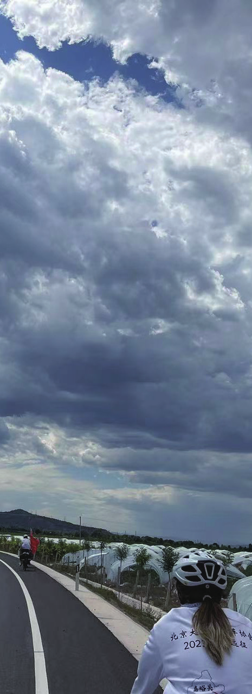
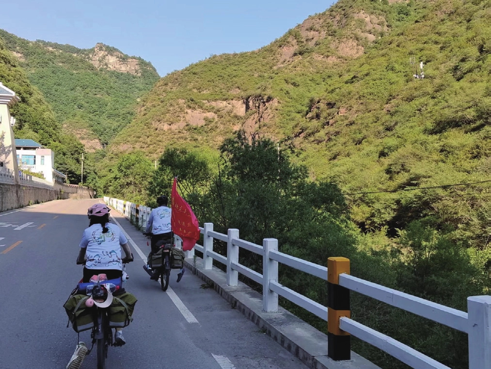
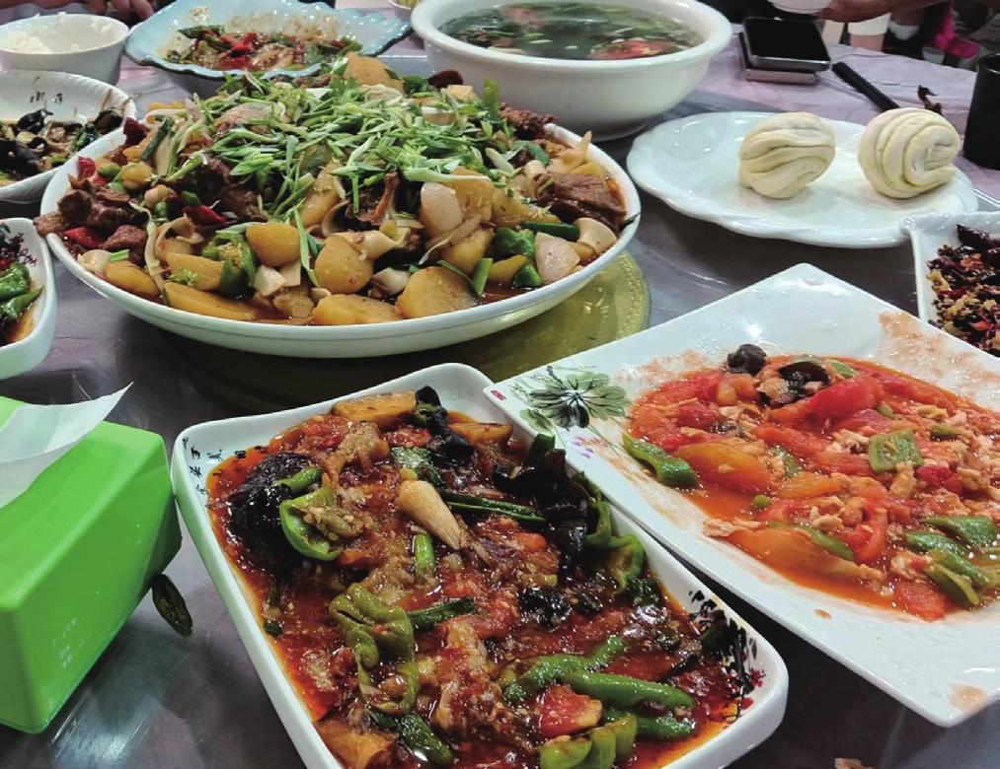
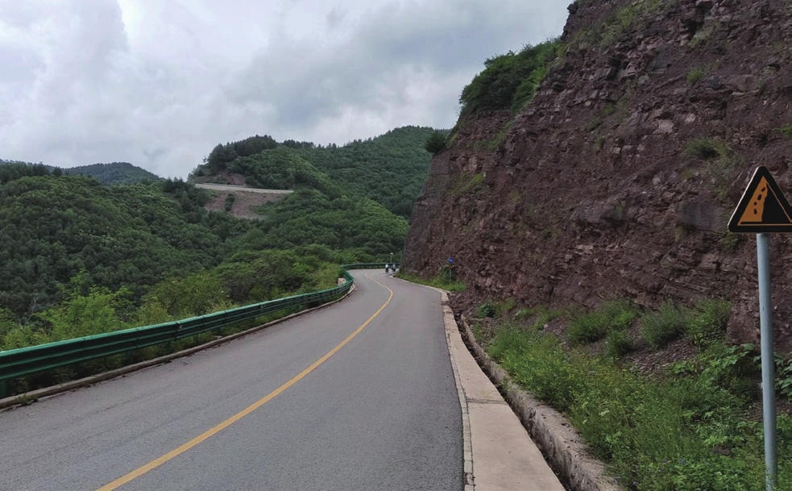
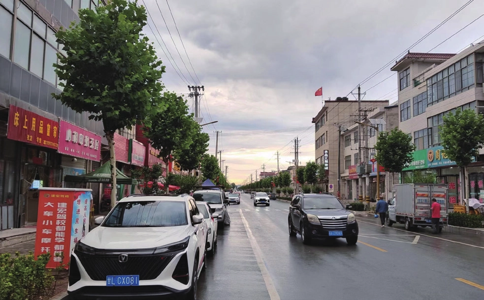

那些曾经出现过的或者失去过的
原刊85
四个物院人和一个团队
我们团内部经常调侃的就是我们 11 个人里面有 4 个物院人。“物理学院”，带着大家的刻板和不刻板的印象，成为了暑期路上许多或愉快或痛苦的事情的背景板。
许多方方面面都能体现物院人独一无二的特质，包括但不限于：玩国王与天使的时候，给愿望是“给我推荐一些书”的同学推荐《量子力学》《广义相对论》和朗道的《力学》；自己的愿望上面写一堆数学公式来检验天使的数学能力；以及在骑行路上遇到什么有趣的现象就开始煞有介事地讨论物理学和哲学。
这些都无伤大雅，但当物院人们开始把他们引以为傲的理性用在情感上时，或许就不那么美好了。
有一个例子很适合用来比喻：处理情感问题就像骑自行车，理性就像你知道自行车是通过转弯时角动量守恒，从而产生进动让自行车回正。但你知道了这些，你甚至可以建模
都是些什么呢？——
精确定量应该什么时候转多少，但这不代表你可以骑车骑的很好，更不代表你可以用这套理论指导别人骑自行车。


然而这就是我暑期路上一直试图做的事情。
我有自己独特的情感体系，而且这套体系往往能够自洽，而且往往可解释性很强。我因此获得了一种错觉，这种解释是无往而不利的。
但是事实就是，当我们这么想的时候，我就会理所当然地忽略别人的感受，并按照我推论的情况去做事。我当然知道这样做的错误，我会去找大家聊天，我希望知道大家真实的想法和情感，但很多时候情感又是表达不出来的。我为此困惑，痛苦，偏偏我身边的人又与我面临同样的问题。“我们学物理的”既是一种调侃，也是一种悲哀。
或许这并不只是物院人的问题，甚至不能说是理科生的问题。这或许是现代社会共有的问题。在车协，会修车修人的越来越多，会处理情感的人越来越少。归根结底，情感问题的最好办法还是去爱，去感受，就像学会骑自行车的最好办法就是去骑一样。然而现在的学生学习的很多，思考的很多，但能够亲身感受这个世界的机会却越来越少。
不要畏缩，勇敢地感受这个世界，这是车协教会我的重要一课。
爱赋予了风雨意义
或许这个故事并不怎么特别，或许每年的暑期团都经历过雨骑之类的事情。但我还是要写。因为这个关于风雨、遗憾、冲突、释然和爱的故事对我来说，就是独一无二的。


这是暑期第四天，从平凉到威戎。我们将翻越六盘山，经历1500 米的爬升。爬坡的过程没有太多值得书写的，毕竟就是爬嘛，天气晴好，万里无云。
当接近垭口的时候，天气开始变化。大风、小雨、降温。当时后旗有人体力不支，手机又没有信号，已经上去的团儿便放坡下来寻找后旗，发现后旗一行人正躲在山坳里吃东西和穿衣服。好在有六哥、小哥和小十参与了双驮包和推人。最终上去的时候已经过了很长时间了。时间紧张，大家抓紧时间拍照。
不出意外的话，就要出意外了。拍照的位置并不好找，六哥便想用无人机来拍照。但是当时山顶风很大，而且随时可能下雨，小哥也说刚刚他放无人机的时候降落时已经差点翻了。无人机是小妹借的，小妹也不愿意冒险。六哥很执着，他说如果无人机飞丢了他可以赔一个。小妹同意了，但团儿还是不同意。六哥又搬出了他辉煌的过往，他说他之前比这更大的风也飞过，肯定没有问题。众人还是不同意。
六哥和四姐是下午的食宿前站，团儿让六哥不要挣扎了，赶紧出发吧。六哥还是想挣扎一下，他说这时候风小了，他可以趁着风小的时候起飞，还可以在手上起飞降落。团儿犹豫了一下，众人还是劝六哥不要冒险。没有人知道为什么一向沉稳严肃的六哥为什么突然还是耍小性子，当然那时也没有人知道六哥之后还有多少次这样的事情。总之众人当时的心情很复杂，而六哥的心情很简单：为什么不让我放无人机？我要放无人机嘛啊啊啊啊啊啊。
用第三人称说了这么久，总之我就是那个六哥。最后还是没放无人机，和四姐黯然离场开始放坡。25km 的下坡，本是期待已久的，毕竟谁爬坡不是为了放坡啊？但是这一刻似乎也索然无味了。
似乎冷风让我冷静了下来。原本的怨恼开始转为悔恨。确实是过于冲动了。我开始思考晚上的团会上怎么给大家道歉了。虽然之前因为带错路等原因已经有很多次的道歉经历，也挨过小弟很多批评让我不要动不动就道歉，但是这一次是真的犯了错误，和之前的失误还是不能比的。所以道歉也要更加严肃一点，我心想是不是可以写一个检讨书，书面的东西总是要更正式一点的嘛。


打腹稿的过程被四姐打断了。四姐提醒我大队已经开始放坡了。前面还有 18km 的缓下路段，缓下路段的前站最容易被杀掉了（前站被杀指前站人员在到达之前被大队追上），我们开始破风加速。随着海拔的降低，天气看起来也不错，我和四姐决定停下来把坡顶穿上的额外衣服通通脱下来。我脱下了冲锋衣和冲锋裤。如果不出意外的话，接下来的几天应该用不着它们了。
果然出意外了。开始下雨了，而且雨越下越大。刚刚脱下的冲锋衣本能起到防水的作用，现在也内外全湿了。手机屏幕也全是水，擦干后只能使用一次。我匆忙提醒大队下雨了，然后继续埋着头苦骑。反正浑身已经湿透了，干脆什么都无所谓了。人类这一点就是很有趣：我们对环境变差很敏感，但如果糟糕的环境持续了一段时间，我们就是麻木，就会适应，甚至忘了环境有多差。然后当这种糟糕的环境结束的时候，我们就会开始慨叹生命的美好。
然而屋漏偏逢连夜雨，路面上开始出现一个又一个的大坑。好巧不巧，我正好高速驶过其中的一个。我的心里忐忑起来：千万不要爆胎啊。可惜没一会后胎还是漏光了气。我们俩心里一凉，这下完蛋了。赶紧拿出包里备用的内胎，扒开外胎一看果然内侧一道大大的口子。也不准备检查有没有刺了，二人直接换上新的内胎。雨天换胎必然是痛苦的，还好四姐是很有天赋的押后助理，虽然一点押后都没学过，但心灵手巧，而且给我加油鼓劲。前站的小打气筒发挥稳定，根本就打不进去气。挣扎了半天，勉强打到能骑，一看距离目的地只有 2km 了。于是决定慢慢骑过去，祈祷不要再出问题。
最终我们顺利到达了威戎镇。去的第一家宾馆就很好。老板当时发着烧，但还是热情地接待了我们。四姐趁人之危，直接把价格从 600 砍到 330，让旁边的六哥大受震撼。随后老板还推荐了旁边的餐馆。
雨后的城镇
我们原本以为大队离我们很近，没想到最后的 10km 大队骑了整整 40 分钟。看来我们的担心是多余的了。威戎镇的主干道上，夕阳尽情地洒下余晖，众人相拥而泣。哎，活着就是幸运的，活着真好。


餐桌上，丰盛的菜肴恢复了能量，大家边吃边开始吐槽今天的逆天雨骑。轮到六哥了，他之前准备的检讨书已经被丢到天涯海角，之前准备的道歉的话也忘得一干二净。“这雨，骑不了一点！”他开始讲述他的心路历程、他因为无人机和小哥的矛盾、他心中的那些执念，当然也不忘吹嘘他精湛的换胎技术。老板也来捧场，原来饭店老板认识旅店老板，旅店老板打电话让饭店老板给加了两个菜。众人狂喜。哎，有时候人就是这么容易满足啊。
正当一切接近尾声的时候，老板又端上来了一盘大盘鸡！震惊的众人连忙询问，方知原来一位北京的校友得知我们的骑行计划后，觉得这是他年轻的时候想做但没做成的，深受感动，遂请我们吃大盘鸡。我们连忙感谢，又看到他留下了联系方式，于是试图联系他。餐桌前聚集了一群社恐人紧张兮兮地讨论怎么开口，看到回复后又开心得像一群孩子。
辛苦一天的大餐
后来六哥发现经此雨骑，原本嘎吱作响的中轴也不响了，大概是沙子被冲走了吧，于是发表评论：“很多时候，一场烦恼就是被另一场烦恼冲走的。”可是冲走烦恼的真的只有雨骑本身吗？或者当我们遇到烦恼的时候，简单地去寻找一些困难的、有挑战的事情就够了吗？风雨本身并没有意义。或许是那群陪你一起穿过风雨，一起哭，一起笑的人，或许是那样一个一起经历风雨，彼此鼓励，彼此包容的团队，或许简单一点说，是爱，赋予了风雨意义吧。
后来六哥回忆到，这大概是他这个暑期最放松、最释然、最无忧无虑的一个夜晚了。
只有在乎过才能不在乎：一个关于执念、遗憾和圆满的故事
不可否认的是，我是一个有很多执念的人。这些执念贯穿了我的暑期，我本以为能够隐藏、掩饰和无所谓的执念，最终还是无一例外展现了出来。
或许我曾经最大的执念就是希望得到大家的认可、赞美和信任。我做了押后负责，一个看起来很有技术含量的职务；我帮忙画路线，尽量丰富大家的体验；我尽量把每一个职务都做得完美，如果犯了错我就会诚惶诚恐地给大家道歉，希望大家不要在意。当然我不是“故意”这样以换取大家的认可，我只是“故意”地尽量做到完美罢了。


暑期结束的时候我还没有意识到什么，我觉得我做到了。我做得很完美。大家都觉得我是很认真负责的人，觉得我做了很多。直到慕田峪结束，二姐对我说“六哥我发现你好可爱啊”。我忽然发现暑期的时候大家好像没有这样的评价。或许是过多的执念，或许是过多的紧张，让我不能自然地展现本属于自己的另一面。
那天晚上我在床上偷偷哭，我觉得我为了这些执念确实错过了很多。我一遍遍地对自己说“我不想做优秀的暑期队员，我只想做你们可爱的六哥”。当时一遍遍地想如果我能够放松开心地去暑期，我自己还有整个团又会少多少纠结和挣扎？
那段时间我很想做些什么来弥补这些遗憾。我参加拉练，我带队，我收徒。我想在车协里做一些事情，试着去弥补为了那些执念留下的遗憾。
后来我就在想，弥补这些遗憾，不也是另一种执念吗？遗憾就是执念带来的，而你又执着于弥补遗憾。这不得不说是一种讽刺。
再后来我就释然了：其实没有什么执念带来的遗憾。你渴望大家的认可，你得到了大家的信任。这对于大学生，尤其是北大的学生来说其实是很可贵的。其实很少有人能真正的不在乎别人的评价，只不过是只在乎有些人的评价罢了。我有了真正了解我的人，有了真正在乎的人，我确实对绩点之类的事情更加释然，我确实拥有了勇气去追求我想要的人生。这就是你得到的。得到了这些之后，你情感的“基本需要”得到了满足，你开始寻求更高级的情感，这是无可厚非的。
所以“放下执念”这句话说得轻巧。在短时间看，执念实现与否似乎都会留下遗憾。没有实现固然是遗憾，实现了，又会有新的执念，又会有新的遗憾。而把时间放长，我们就会发现，执念实现与否又都是一种圆满。实现了的执念固然是圆满，没能实现的执念，经过岁月的冲洗，我们最终能看见那些陪你一起实现执念，一起哭，一起笑，一起拥抱彼此的人；记起那些走向执念过程中的意外的收获和美好；发现那个为了执念不顾一起的人的可怜、可笑和可爱。
人生就是这样。我们每个人都有执念，我们没法避免遗憾，我们都会收获圆满。